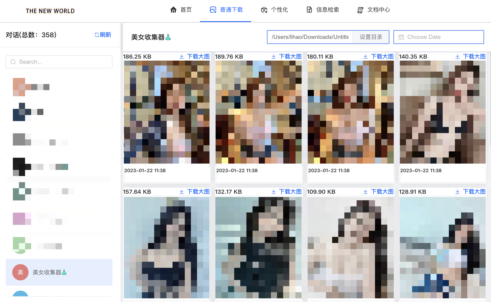
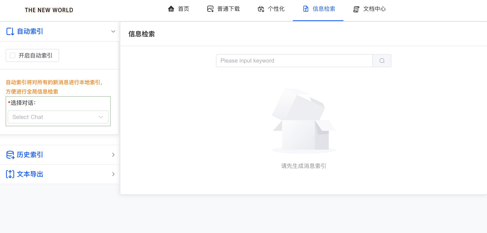

功能概述¶
TG-FF资源管理助手 v3.0.0 是一款专为Telegram用户设计的资源管理工具，提供全面的媒体内容下载、管理和转发功能。本页面将概述软件的主要功能模块，帮助您快速了解软件的核心能力。
核心功能模块¶
TG-FF包含以下主要功能模块：

1. 首页模块¶
用户信息和全局设置中心：
- 个人信息展示: 显示账号基本信息
- 代理管理: 随时修改网络代理设置
- 功能导航: 快速访问所有主要功能
2. 登录模块¶
安全的二维码登录系统，支持多种代理选项：

为什么需要设置代理？
由于网络环境的限制，在中国大陆及部分地区，无法直接连接到Telegram服务器。因此，您必须设置代理才能使用TG-FF。代理是一种网络中继服务，可以帮助您绕过网络限制，连接到Telegram服务器。
什么是代理？如何获取代理？
代理是一种允许您通过中间服务器连接到目标网站的技术方式。获取代理的常见途径包括：
- 使用付费VPN服务，这些服务通常提供SOCKS5或HTTP代理
- 使用专用的代理工具，如Clash、V2rayN、Shadowsocks等
- 从代理服务提供商处购买专用代理
扫码登录详细步骤:
- 初始界面: 首次启动时，二维码可能因网络限制无法加载（如上图所示的"等待"状态）
- 设置代理: 点击右下角的"设置代理"按钮，打开代理设置界面

- 配置代理:
- 选择代理类型（大多数用户应选择"SOCKS5"）
- 填写代理服务器地址（通常是"127.0.0.1"，即本机地址）
- 填写代理端口号（根据您的代理软件而定，见下文说明）
- 如有需要，填写用户名和密码（多数本地代理不需要）
- 点击"测试代理"按钮确认连接是否正常
如何查找您的代理端口?
不同的代理客户端有不同的默认端口和查看方式：
- Clash:
- 默认SOCKS5端口通常是7890
- 可在Clash面板的"设置">"端口"中查看
-
HTTP代理端口通常是7890或7891
-
V2rayN:
- 默认SOCKS5端口通常是10808或10809
-
可在主界面的"设置">"基本设置">"本地SOCKS端口"中查看
-
Shadowsocks:
- 默认SOCKS5端口通常是1080
-
可在设置中的"本地端口"选项查看
-
Surge:
- 默认SOCKS5端口通常是6152
-
可在"设置">"出站模式">"代理设置"中查看
-
Quantumult X:
- 默认端口通常是7890
- 可在设置的"本地SOCKS5/HTTP服务"部分查看

- 代理测试:
- 填写完代理信息后，点击"测试代理"按钮
- 系统将尝试通过您设置的代理连接Telegram服务器
- 上图显示系统正在测试您配置的代理
- 测试成功会显示"连接成功"提示
-
测试失败会显示错误信息，请检查代理设置是否正确
-
加载二维码: 代理设置正确并保存后，系统将自动加载二维码

- 扫码登录:
- 在手机上打开Telegram应用
- 点击左上角菜单(≡)，选择"设置"
- 在设置中找到"设备"或"已登录的设备"选项
- 点击右上角的"扫描二维码"或"+"按钮
- 使用手机摄像头对准电脑屏幕上的二维码
- 在手机上确认登录请求
- 登录成功后软件将自动进入主界面
故障排除:
如果您无法成功设置代理或加载二维码，请尝试以下方法：
- 代理无法连接：
- 确认您的代理服务/VPN是否正常运行
- 检查端口号是否正确
- 尝试重启您的代理软件
-
尝试使用其他类型的代理
-
二维码加载失败：
- 点击刷新按钮重新加载二维码
- 确认代理设置正确并已保存
-
检查网络连接是否稳定
-
扫码无反应：
- 确保手机和电脑在同一网络环境下
- 更新手机Telegram应用到最新版本
- 尝试调整屏幕亮度，确保二维码清晰可见
常见登录问题解答:
- 登录后很快就自动退出
可能原因与解决方案: - 会话已在其他设备被终止 - 检查您的Telegram账号是否在其他设备上被登出 - 网络连接不稳定 - 确保您的网络连接稳定，考虑使用更可靠的代理 - 软件版本过旧 - 更新到最新版本的TG-FF - 代理连接中断 - 检查代理服务是否仍在运行，尝试重新设置代理
- 如何在不同电脑上使用同一个账号？
TG-FF支持多设备登录同一账号，无需退出其他设备。只需在新设备上扫码登录即可。Telegram官方支持在多个设备上同时登录同一账号。所有设备都需要正确设置代理以确保连接正常。
- 我的账号安全吗？软件会存储我的聊天内容吗？
TG-FF使用Telegram官方API接口，不会存储您的密码。软件只会将您明确指定要下载或索引的内容保存到您选择的本地目录中。其他聊天内容不会被永久存储。登录过程完全通过Telegram官方认证流程，确保账号安全。
- 扫码登录无法完成，二维码一直显示"等待扫描"
可能原因与解决方案: - 网络连接问题 - 检查您的网络连接是否正常，代理是否设置正确 - 代理设置不正确 - 重新配置代理设置，确保端口和地址正确 - Telegram应用版本过低 - 确保您的手机Telegram应用已更新到最新版本 - 二维码已过期 - 点击"刷新"按钮重新生成二维码，然后再次尝试扫描
- 使用代理后依然无法连接
可能原因与解决方案: - 代理服务不稳定 - 尝试更换其他代理服务或重启代理软件 - 代理类型不兼容 - 如果SOCKS5代理不工作，尝试使用HTTP代理或MTProto代理 - 代理服务器被封锁 - 某些代理服务器可能被限制，尝试使用新的代理服务器 - 端口被占用或阻断 - 尝试更改代理端口号，或检查防火墙设置
主要特点: - 安全认证: 使用Telegram官方API，确保账号安全 - 多种代理支持: 支持SOCKS5和MTProto代理，适应各种网络环境 - 记住登录状态: 登录成功后，软件会保存登录状态，下次启动无需重复登录 - 多账号支持: 支持在不同设备上同时登录同一账号
4. 普通下载模块¶
快速浏览和下载对话媒体内容：

- 对话选择: 从左侧列表选择目标对话
- 媒体浏览: 右侧区域显示选中对话的所有图片和视频资源
- 时间筛选: 按照时间范围筛选查询结果
- 一键下载: 方便地将选中内容下载到指定目录
5. 个性化下载模块¶
高级的媒体处理和自动化工具，包含五个专业子模块：
5.1 批量下载¶

针对历史消息的大规模媒体内容下载： - 自定义条件批量获取历史媒体消息 - 高效处理大量图片和视频资源
5.2 自动下载¶

新消息自动监听和下载： - 设置条件自动监听新消息 - 符合条件的媒体内容自动下载保存
5.3 单文本转发¶

文本内容批量转发： - 可设置转发频率和规则 - 将准备好的文本内容转发到指定对话
5.4 多图文转发¶

灵活的媒体和文本组合转发： - 支持文本、媒体或文本+媒体组合发送 - 支持多种媒体格式：png、jpg、jpeg、mp4
5.5 对话互转¶

自动消息转发系统： - 设置源对话和目标对话 - 自动将源对话的新消息转发到目标对话
6. 信息检索模块¶

强大的消息索引和搜索系统：
- 自动检索: 对新消息进行本地索引，支持全局搜索
- 历史检索: 对历史消息进行索引，便于查找过往内容
- 内容导出: 将检索结果导出为可读格式
获取帮助¶
如果您在使用过程中遇到问题，可以通过以下渠道获取帮助：
功能详解¶
要了解每个功能的详细使用方法，请参阅：
功能分类¶
我们的软件功能可分为以下几个模块：
基础模块¶
基础模块包含软件的核心功能，是所有用户都需要了解的部分：
- 用户管理和权限控制
- 数据输入和编辑
- 基础查询和筛选
- 简单报表生成
详细了解请参阅基本功能。
高级模块¶
高级模块提供更强大的功能，适合有特定需求的用户：
- 高级数据分析
- 自定义流程和自动化
- 复杂报表设计
- API集成和扩展
详细了解请参阅高级功能。